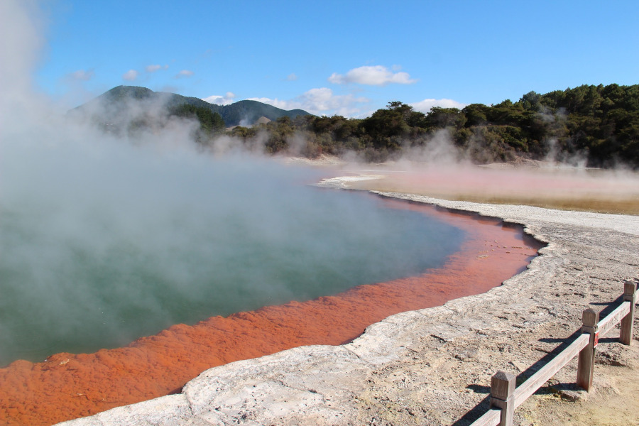

Rotorua ist eine Stadt im Distrikt Rotorua Lakes der Region Bay of Plenty auf der Nordinsel von Neuseeland. Die Stadt ist Sitz des Rotorua Lakes Council und auch als Kurort sehr beliebt. (Quelle: wikipedia)
Vulkangebiet Rotorua (Quelle: nydegger@pixabay)